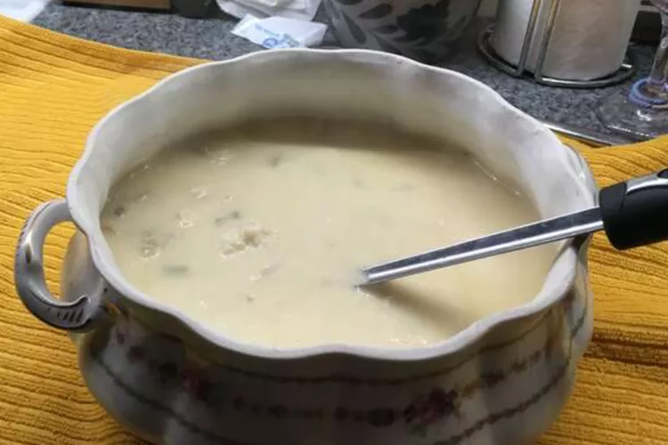

Oyster Stew Recipe

This is best oyster stew you ever had! It is elegant and satisfying.
I serve it hot, alongside some toasted homemade bread. Try adding a
drop or two of hot sauce if you like — it's delicious!
Oyster stew is a Christmas Eve tradition in many households, but you'll
want to serve this easy and hearty meal all year long.
How to make Oyster Stew
You'll find the full, step-by-step recipe below — but here's a brief overview
of what you can expect when you make this hearty oyster stew:
Ingredients
- Vegetables
- Butter
- Half-and-half
- Oysters
- Seasonings
Steps on how to make the Lasagna
- Saute the celery and shallots in butter.
- Heat the half-and-half, then stir in the sauteed vegetables.
- Add the oysters and their liquid. Season to taste.
- Cook until the oysters curl at the ends.